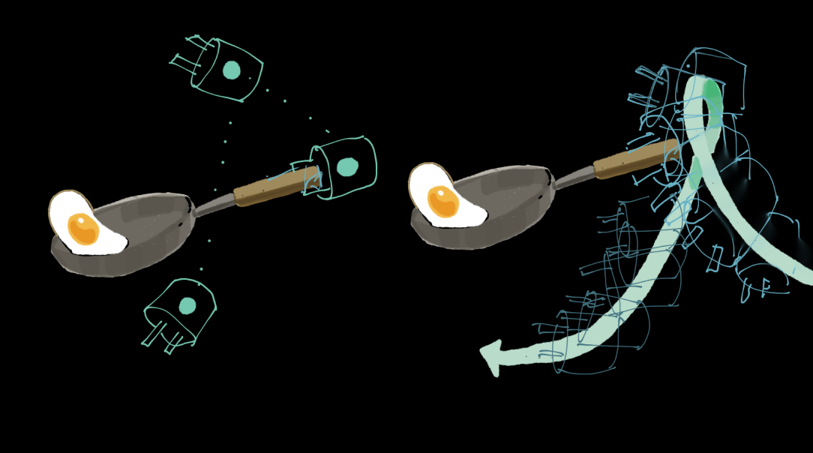
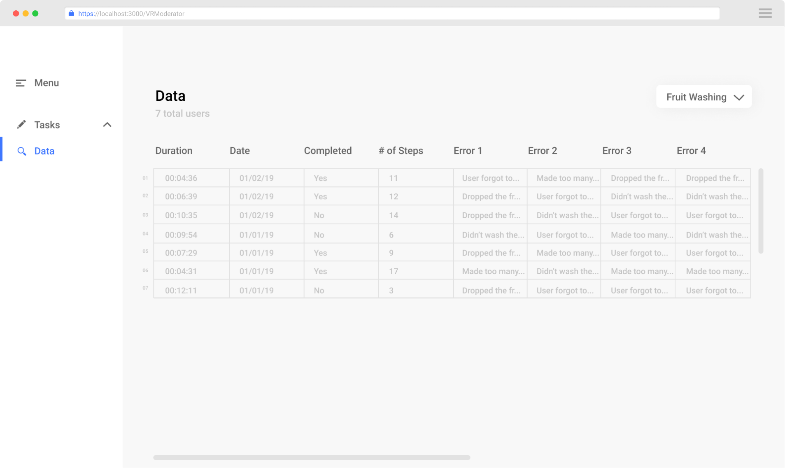

Marisa Lu
Lucas Ochoa
Annie Huang
Mary Safy
Riva Fouzdar
team
timeframe
Jan – May 2019
role
Technical Lead
Design
Design
project overview
The notion of robotic personal assistants has long captured our collective imagination, from the mechanical automata of ancient China to the cyborg tin woodmen and intelligent sidekicks of pop culture. The hardware is already here, so where are these vaunted robots of science fiction?
Our client was the Robots Perceiving and Doing Lab at Carnegie Mellon University. Their goal is to use machine learning to create these personal robotic assistants. The goal of the project was to help the lab build a usable, intuitive virtual reality (VR) environment to faciliate the collection of user demonstrations of tasks. Once the data is collected, machine learning techniques use the demonstrations to teach robots to complete tasks. This data and method of robot teaching can allow for remote instruction, or teleoperation, for tasks that cannot be done in person.
primary questions
- Is a moderator necessary for the collection of task data? How will errors, time, task completion be tracked in the environment? Should a researcher be moderating task collection or should users self-moderated?
- How would the user interact with the interface and the environment? How can we make the environment easy to navigate and easy to complete precise actions?
- What is the primary user perspective while operating the robot? Should the VR interface happen in first person, third person, or both?
- How do we account for latency between real time robot movement and user input?
solution
Our solution consists of 3 parts, with each part addressing a different aspect. There are two major applications: the VR environment with its spatial interfaces and control mechanisms and a 2D interface for the researcher moderating the task collection from the VR user. We also created a final proof of concept video to showcase the VR interface in its future state.
Our solution addressed these problems by:
- Moderated vs. UnmoderatedHad the VR interface moderated by a researcher who would log errors, send messages, and track time.
- Augmenting PrecisionDesigned a cursor (ghost end effector) and cursor marker (ghost trail) to specific points within the VR environment for precise and accurate navigation.
- First vs. Third PersonCombined first and third person to take advantage of the benefits of both perspectives.
- Path Planning vs. Live ControlDisguised lag of real-time robot movement from user’s movement in VR environment.
prototype
The prototype (done in Unity) is the actual working demo that the team created to document and test novel interactions for VR teleoperation. In the video, the user's task to try to teach the robot to pick up the fruit and put it in the bowl.
the future
The below video is an additional exploration of what the future of VR teleoperation might look like. The team explored for the future of VR for robot teleoperation.
design process
user studies
Before jumping into designing VR, we had to first understand the design patterns and pitfalls of VR. To help us answer this question, we conducted exploratory think-aloud usability tests with 11 participants, who all had little or no experience using VR. These participants went through think-aloud exercises with 3 existing VR programs — Microsoft Maquette, Virtual Virtual Reality, and Google Earth VR. With this study, we aimed to answer the following questions:
- What are the pain points and points of confusion for a user in a VR environment given instructions and a series of small tasks?
- What design patterns are commonly being used in popular VR applications? (for menus, cursors, controls, etc.)

Moving forward from these studies, we kept these four things in mind:
- Use clear forward feedback and instructions to allow for easier onboarding.
- Current VR UIs are lack in discoverability and providing meaningful feedback and guidance.
- 2D UI paradigms do not necessarily mix with 3D UI paradigms.
- Physical limitations such as space must be kept in mind.
storyboards
We created multiple storyboards to define potential solutions to the various usability problems faced in VR environments. The storyboard details how a user would enter the VR environment, view a tutorial for a cup stacking task, and then attempt to complete that task. Below is an aggregated storyboard detailing important interactions that were discussed.
3d prototyping
To get a better understanding of what were the key interactions, the team did some whiteboxing in Microsoft Maquette. In this process, we iterated on different controller interactions and environment setups.
defining terms
Taking our storyboards and prototypes, we conducted speed dating session with 6 users. Through these sessions, we sought to inform ourselves on key factors. After gathering the feedback, the team discussed and defined key terms and approaches.
1st vs. 3rd person
First Person
First person perspective is more intuitive, since it more closely mimics real life. However, first person lends itself to unpredictable inverse kineatics and physics when the end effector is tied directly to user motion.
Third Person
Third person more closely mimics current kinesthetic learning and is what many researchers already employ with robot training.
path planning vs. live control
Path Planning
Path planning allows the user to set positions for the robot to travel to. This method of robot control accounts for the lag between the user’s action completed in the VR environment and real-time robot movement.
Live Control
With live control, the robots does exactly as the user does in real time. Live control is more intuitive for the user to complete tasks.
Moving Forward
Based on discussions, we decided to move foward with a combination of first and third person to use the advantages of both perspectives. Along with this, we decided to use path planning to help account for system lag.
mid-fidelity interactions
At this stage of the project, we focused on identifying ways that users can better control the robot to complete tasks.
augmenting precision
In these explorations, we looked at the "Key-Ignition" model as a physical signifier of how to engage with the robot's end effector. We also did further explorations on proximity based activations.


control hierarchy
assumptions
We made a few assumptions in the process of designing the controls.
- Robot manipulation is one handed and primarily in first person, so dominant hand primarily focuses on this task.
- Separating controls based on dominant and non-dominant controllers helps users distinguish between physically controlling the robot and changing the mode that the user is operating in.
- Separation of controls allows for fluidity of movement.
trajectory-based control vs. position-based control
In early explorations, we focused on position-based control, where the robot moves it previous position to the next planned position. This method of manipulation does not allow for smooth, continuous actions and looses the fluidity of the motion. Thus, we pivoted to designing controls with trajectory-based control of the end effector.
final design
fluid 1st and 3rd
First Person
The user can stand in the position of the robot and manipulate it.
Third Person
Alternatively, the user can move around the robot and puppeteer it.
In user tests, users primarily prefer to stand in first person and would occasionally move to other angles to manipulate the robot.
environment
The environment was designed to allow for a variety of tasks. The user is placed into relatively empty environment and presented with a task. The task is demonstrated and the user is then expected to replicated it.
controls
As previously mentioned, we decided to split up dominant controller and non-dominant controller actions. The actions of the dominant controller are primarily focused on the movements of the robot arm.

Dominant Controller – Creating a Trajectory
The user presses and holds the trackpad to "draw" a trajectory. This leaves a "ghost" trail or a series of positions for robot to mimic.
Dominant Controller – Closing the End Effector
To control the "claw" or end effector, the user presses down on the trigger and the trackpad at the same time, simulating a gripping motion. The color of the ghost changes to signify a closed state.


Non-dominant Controller – All Other Actions
The non-dominant controller contains all other functions.
Reset – Resets scene
Undo – Removes most recent section of ghost trail
Redo – Brings back most recent section of ghost trail
Run – Sends ghost trail to the robot to execute
moderated interface
moderated vs. unmoderated interface
Moderated
When the interface is moderated by a researcher, the researcher can more accurately monitor errors, instead of depending on the user to track their own errors. The user can simply focus on completing the task in front of them, without being overwhelmed with this secondary task.
Unmoderated
When the interface is unmoderated, less manpower is required and tasks can more easily be completed remotely. Instead machine learning can be used identify and correct mistakes.
final interface
Tasks
The task screen allows the moderator to view testing sessions as they happen and also view data collected from previous testing sessions.
Moderator View
The moderator will have concurrent feeds of the physical robot in real time, the VR user in their physical environment, as well as a livestream of what the VR user is seeing in the virtual space.
Error Tracking
Researchers can input non-fatal and fatal errors manually, by pressing a button on the upper right hand menu. Users are informed through the VR interface that they have made an error.
Notifications
Researchers can send messages to the user while they are in the VR environment to provide hints or instructions. They can also create internal notes during the user test, which are not seen by the user.

Task Completion
When the user sufficiently completes the task, the moderator marks the task as complete, sending the user a message showing their completion time. The moderator can then view aggregate data or return to the task screen.
Data Aggregation
Researchers can view aggregate data of all users who have completed tasks. They can also view individual data and recordings from each user test and add time markers, errors, and other notes after the test has taken place.

reflection
Our goal was to design a more intuitive interface for instructing robots to complete a task. The hope is that we can use this data to better enable robot intelligence and provide our client with the data necessary to train these robots. By bridging the gap between physical motion and robot operation, it opens a world of opportunities for controlling devices remotely, accurately, and precisely.
There are exciting discoveries yet to made in this realm and our contributions have just scratched the surface of the future of robot teleoperation. While our role in this project is over, this project is still ongoing the CMU Robots Perceiving and Doing Lab.